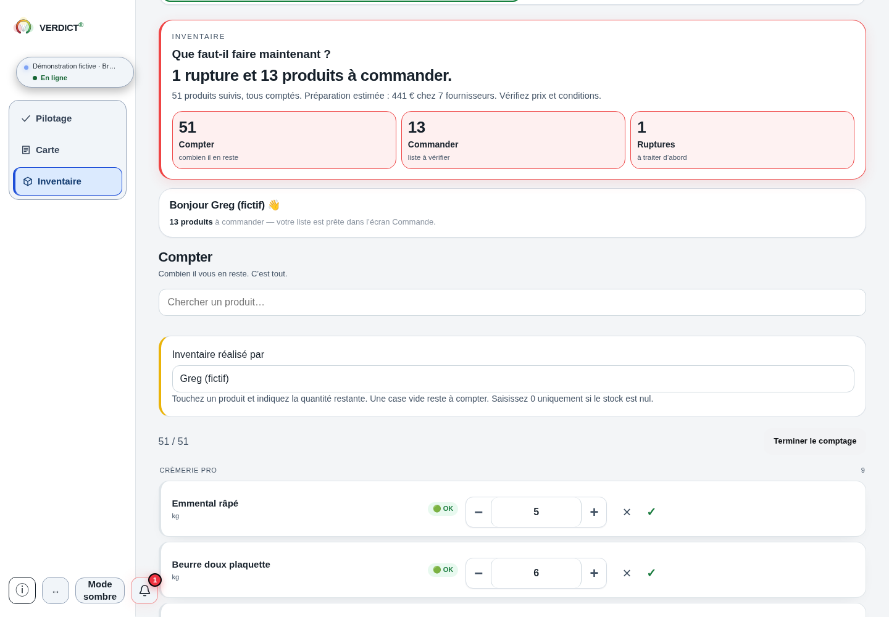

Inventaire
Prévu gratuitement pour le comptage, les prix connus et la préparation des besoins.
Préparer un premier comptage
Un stock utile commence par une quantité comptée dans une unité claire. Préparez vos références, vérifiez les prix disponibles, puis relisez le besoin avant de préparer une commande. Ce guide vous aide à suivre ce chemin pour la cuisine et le bar.
Le périmètre Inventaire est prévu gratuitement dans la grille du projet. Vous pouvez ici préparer votre comptage et consulter les fonctions présentées.
Sur le terrain
Le comptage part des produits réellement présents. Une interface ne peut pas deviner une référence oubliée ni mesurer à votre place un produit entamé.
Repérez le produit, son emplacement et l’unité à compter. Fixez la date du relevé et notez les mouvements qui pourraient modifier la quantité pendant le comptage.
Comptez le restant réellement disponible. Pour les produits entamés, utilisez une méthode explicite et gardez-la identifiable.
Repassez sur les références non relevées et les quantités incertaines. Une ligne vide reste à vérifier ; zéro doit correspondre à une quantité vérifiée.
Écran réel · données de démonstration

Écran Compter de la démonstration fictive Brasserie Collet, copie corrective Master2 f05567b, 30 octobre 2026. L’Emmental râpé est renseigné à 5 kg dans le modèle fourni. Aucun nouveau comptage n’a été enregistré ; cette vue montre la quantité et l’unité, pas le prix ni la valorisation.
Voir l’écran en grandUne valeur qui s’explique
Vérifiez si le prix d’achat HT connu concerne le produit, une unité ou un colis. La quantité comptée et le prix retenu doivent décrire la même unité avant de lire une valeur.
Gardez la source du prix et la méthode retenue. Un prix absent reste à rechercher ; la valeur des lignes connues peut être partielle.
Avant de retenir une quantité
Une quantité proposée ou arrondie au colis reste une préparation. Elle ne constitue pas une commande transmise au fournisseur.
Explorer un besoin de commande simplifiéOutil pédagogique : il ne couvre pas les arrivages, les délais ni l’envoi d’une commande.
Pour pouvoir comparer ensuite
Conservez avec vos documents de travail la date, le périmètre, les unités, les quantités et les prix utilisés. Ces repères permettent de rapprocher un comptage suivant et de comprendre ce qui a changé.
Une quantité en stock décrit un instant. Pour examiner une consommation simple, rapprochez deux comptages comparables et les réceptions nettes des retours de la période. Vérifiez aussi les autres mouvements pertinents pour le périmètre retenu.
Une consommation simple et l’écart économique avec le théorique des recettes et ventes sont deux lectures distinctes.
Les périmètres prévus du projet
Prévu gratuitement pour le comptage, les prix connus et la préparation des besoins.
Ajoute les lectures des ventes, des charges et de la Carte.
Ajoute notamment le rapprochement économique de la matière réelle avec le théorique des recettes et ventes, ainsi que des lectures détaillées de service et de trésorerie.
Dans la démonstration présentée
L’écran publié dans la présentation produit montre des besoins par fournisseur, des unités et des colis, avec des prix anciens et des vérifications encore nécessaires. Il illustre une préparation, sans commande transmise.
Lire l’écran et sa légende